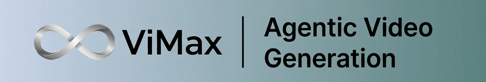

创意输入长剧本生成分镜设计
端到端视频链路
从创意、小说或脚本出发，ViMax 会自动补齐剧本、镜头、参考图和视频生成步骤，尽量把“讲故事”变成流水线问题。
ViMax 是一个 agentic video generation 框架，把创意输入、长剧本生成、分镜规划、参考图选择、图像一致性校验和视频输出串成多智能体流水线，重点不是单次出片，而是长链路一致性。
idea → script → storyboard → image → video。这张卡的目的不是复述仓库名，而是把“它解决什么、怎么用、边界在哪”先说清楚。
ViMax 是一个 agentic video generation 框架，把创意输入、长剧本生成、分镜规划、参考图选择、图像一致性校验和视频输出串成多智能体流水线，重点不是单次出片，而是长链路一致性。

从创意、小说或脚本出发，ViMax 会自动补齐剧本、镜头、参考图和视频生成步骤，尽量把“讲故事”变成流水线问题。
长文本分析、场景切分、多机位模拟、参考图选择、自动图像提示词生成与并行镜头处理，都是它的主力模块。
uv sync 后可走 vimax tui，也可以直接用 main_idea2video.py / main_script2video.py；入口虽然少，但每个入口都对应完整工作流。
创意、自然语言提示、参考图、风格指令和参数进入系统。
Agent 接管阶段切换、资源管理和失败重试。
参考图和前序时间线被当作约束，而不是装饰。
图像生成器先出图，再由 MLLM/VLM 做一致性选择，最后推进到视频。